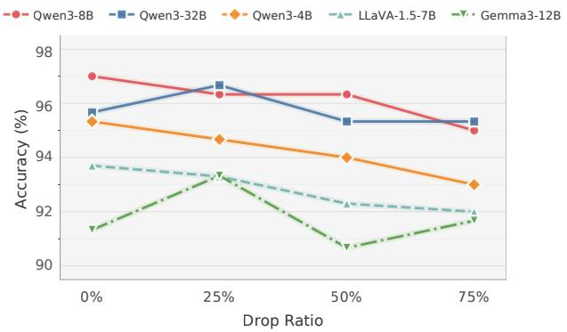

Figureure 1 · We intervene on the input image at both global and entity levels whileFigure 1. We intervene on the input image at both global and entity levels while keeping the question fixed. Global-level interventions weaken overall visual evidence through token masking, noise blur, and black, whereas entity-level interventions manipulate the question-relevant region via black mask, black box, and entity swap. In this example, despite substantial degradation or alteration of the visual evidence, the model’s final answer can remain unchanged and still predict that a baseball glove is present.这张图来自论文 PDF 的结构化抽取。当前用于辅助理解 Seeing without Looking 的方法或实验，请结合正文精读段落一起看。

Figureure 2 · Effect of random image token dropping on POPE accuracyFigure 2. Effect of random image token dropping on POPE accuracy. Even at 75% token removal, accuracy remains nearly unchanged, suggesting that high performance on this benchmark does not require complete visual representations.这张图/表用于判断 Seeing without Looking 的实验收益来自哪里。重点看替换、消融或跨模型设置下趋势是否一致，而不是只看单个最高分。